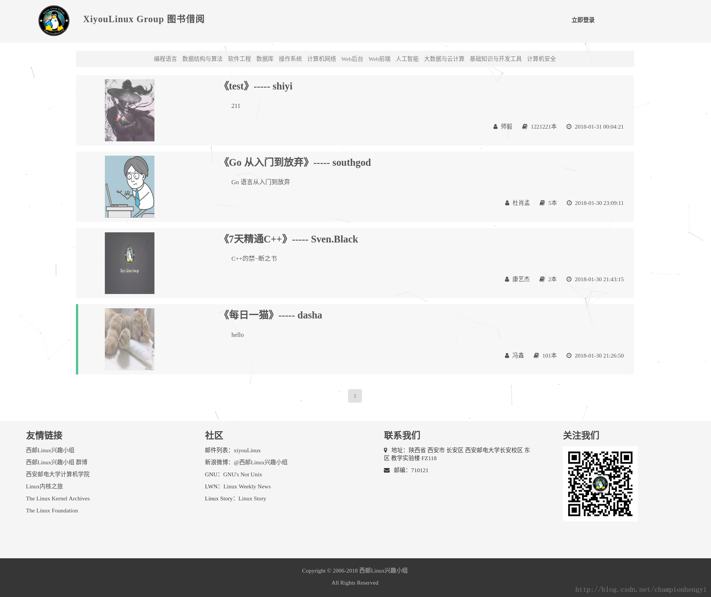
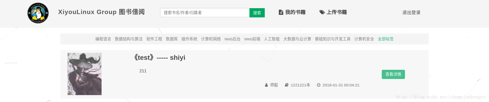
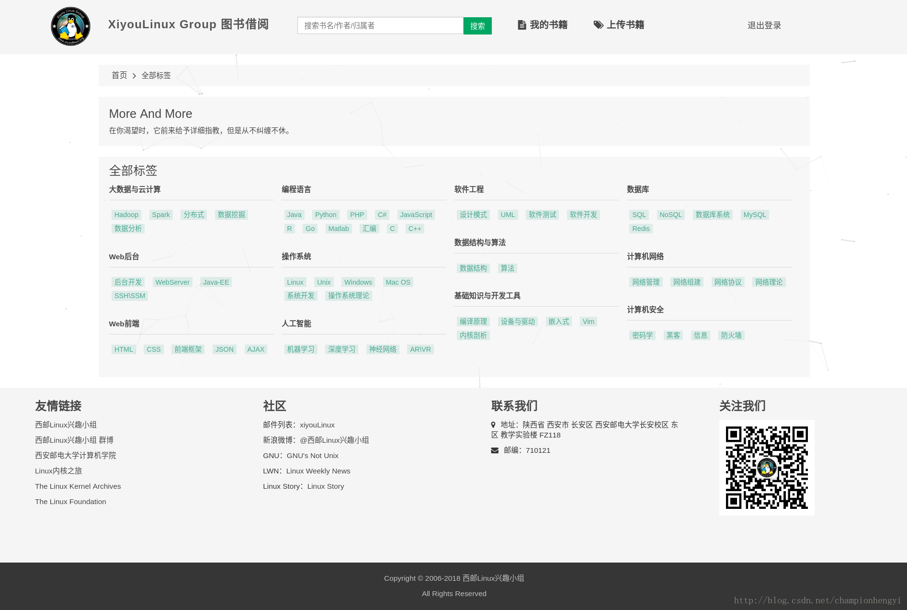

项目地址中包含了一份README，因此对于项目的介绍省去部分内容。这篇博客，主要讲述项目中各个模块的实现细节。
项目概述及成果
首先将本项目使用到技术罗列出来：
- 使用Spring + Spring MVC进行后台开发
- 使用Bootstrap和jQuery框架进行前端开发
- 使用自定义注解与自定义的JdbcRowMapper简化JdbcTemplate对数据库的操作
- 使用腾讯云的对象存储服务进行图书照片的远程存储
- 使用MD5加密算法对用户密码在后台进行加密存储
- 使用过滤器进行一个会话中的身份校验
- 手动从Spring容器中获取bean
- 数据库设计中的诸多细节… …
由于前端开发是由团队中的其他人在负责，在加上博主对前端这块并不了解，因此本篇博客并不讨论有关第二点技术实现上的细节。
本项目如README中所述，在后期还有许多需要进行优化的地方。如果你对本项目感兴趣，不妨在GitHub中将其Star，以获得对本项目的持续关注～
至于项目成果大家可以阅读README，我在其中有贴上程序运行后的部分截图。或直接在本地搭建环境，运行此项目。过程中如有任何疑问，你也可以联系我：
1 | spider_hgyi@outlook.com |
关于项目的整体架构我也不再描述，README中对其进行了补充。
项目背景
这个项目的产生是有需求背景的。我们旨在为XiyouLinux Group开发一个管理图书借阅与归还的平台，从而能对小组中存在的大量书籍进行有效的管理。
我们的“老一届boss”刚开始给我们提出了第一版的需求，在此需求上，我们最初使用Servlet + JSP的方式进行后台开发。当然第一版由于太low我们对其进行了阉割。在我们学习了Spring与Spring MVC之后，就开始打算对其进行version 2.0的开发，并找来了一个专门学习前端的小可爱，才有了当前的图书借阅平台。
此图书借阅平台实现的功能模块请大家移步至README进行查看。
接下来，我就按照每个模块的顺序，给大家讲一下本项目中用到的重点技术及其实现细节。
实现细节
注：博主只会挑几个重点模块去进行讲述，因此有些模块将不会涉及到。
模块一：登录模块
登录模块分为三个部分，登录前主页面、登录后主页面以及登录框。
在这里我给大家截一张图看一下登录前后主页面的功能差距：
登录前：

登录后：

我对登录后的页面只截取了和登录前有不同功能的区域。效果展示完毕，那么接下来就谈一谈这个模块中使用到的技术及其实现细节（只需考虑登录后页面实现的功能即可）。
分页功能的实现
作为一个展示信息的Web页面，怎么可能没有分页功能呢，只不过是由于上图中的测试数据太少，没有给大家展现出来罢了。我们使用的是传统分页功能，而传统分页中又分为“真分页”与“假分页”：
- 真分页：每次从数据库中只返回当前页的数据，然后将数据交由视图进行渲染
- 假分页：从数据库中拿取所有需要或将要展示的数据，将数据交由视图，由视图实现数据的分页功能（JS实现或JSTL实现）
我们也很容易判断出哪种情况下何种方法最优：
如果数据量较小，使用假分页的效果会更优；如果数据量庞大，使用真分页的效果更优。
本项目使用的是“真分页”，我们接下来看一下实现思路与实现代码：
实现思路：
- 首先我们需要一个存储页面信息的Java Bean，也就是传统的Java对象
- 使用GET方法进行页面跳转请求，也就是说，我们可以从URL中得到当前页面是第几页
- 在后台中进行逻辑构造，将Java Bean中的实例字段进行部分（完全）填充
- 使用Java Bean所提供的页面信息，构造相应的SQL语句，拿到当前页数据
- 使用TreeMap对数据进行时间维度上的排序，最终返回给视图进行渲染
实现代码：
- 存储页面信息的Java Bean：
1 | /** |
- 从URL中得到当前页面是第几页，进行逻辑处理，填充上面Java Bean中的部分实例字段：
1 | /** |
- 根据页面信息构造SQL语句，拿取当前页的数据：
1 | /** |
- 对获取到的信息进行排序：（按时间维度）
1 | public class BookUserMapUtil { |
- JSP页面中对应的分页实现（JSTL与EL）：
1 | <!--分页的实现--> |
登录校验之过滤器实现
既然系统具有登录功能，那么我们就需要注意一些事情：
- 怎么防止未登录的用户访问登录后的页面
- 用户的cookie失效之后，我们需要引导用户进行重新登录
为了解决这两个问题，就需要引入过滤器。关于过滤器的功能与在Serlvet中的使用请移步至这一篇博客：Servlet–Servlet进阶API、过滤器、监听器
我现在要说的是过滤器在Spring框架中的使用，先看实现代码，并不难理解：
1 | /** |
有两个问题需要解决～
1.什么叫做每个请求只通过一次这个过滤器。Filter不都是仅仅经过一次的吗？
不是的！不然就不会有这个类了。
此方式是为了兼容不同的Web容器，特意而为之，也就是说并不是所有的Web容器都像我们期望的只过滤一次，Servlet版本不同，表现也不同。
如，Servlet2.3与Servlet2.4也有一定差异 ：
在Servlet-2.3中，Filter会过滤一切请求，包括服务器内部使用forward转发请求和<%@ include file=“/index.jsp”%>的情况。
到了Servlet-2.4中Filter默认下只拦截外部提交的请求，forward和include这些内部转发都不会被过滤，但是有时候我们需要forward的时候也要用到Filter。
因此，为了兼容各种不同的运行环境和版本，默认Filter继承OncePerRequestFilter是一个比较稳妥的选择。
2.有关HttpSession session = httpServletRequest.getSession(false)的一点小知识。
现实中我们经常会遇到以下3中用法：
1 | HttpSession session = request.getSession(); |
他们之间的区别是什么？
getSession(boolean create)意思是返回当前reqeust中的HttpSession，如果当前request中的HttpSession为null且create为true，就创建一个新的HttpSession，否则就直接返回null。
简而言之：
request.getSession(true)等同于如果当前没有HttpSession还要新创建一个HttpSessionrequest.getSession(false)则等同于如果当前没有HttpSession就直接返回null
那么我们在使用的时候：
- 当向HttpSession中存储登录信息时，一般建议：
HttpSession session = request.getSession(true)- 当从HttpSession中获取登录信息时，一般建议：
HttpSession session = request.getSession(false)
还有一种更简洁的方式：
如果你的项目中使用到了Spring，对Session的操作就方便多了。如果需要在Session中取值，可以用WebUtils工具的getSessionAttribute(HttpServletRequestrequest, String name)方法，看看源码：
1 | public static Object getSessionAttribute(HttpServletRequest request, String name) { |
使用时：
1 | WebUtils.setSessionAttribute(request, “user”, User)； |
密码加密之MD5算法
也许你没有听过MD5加密算法，但是有些人看到这个标题首先会产生一个疑问：对密码为什么还要加密？
主要是从安全性的角度上考虑，我们知道如果不对密码进行加密，那么密码将会在后台以明文的形式存储到数据库中。如果你的数据库足够安全，保证不会被别人所侵略，这当然没有什么问题。但事实是，我们不得不小心SQL注入等一系列数据库安全性问题，这时候，在数据库中所存储的有关个人隐私的信息，就显得十分重要了。因此将密码在后台进行加密，对于真正的企业级开发来说，是一件不可或缺的事情。
解决掉这个疑惑之后，让我们一起来看看MD5加密算法的核心思想及代码实现。
好吧，博主看了一些关于MD5的核心思想，并没有看懂，先在这里给大家放一篇讲述MD5加密算法实现原理的博客链接：MD5算法原理 — 博客中有少量错误，大家理性阅读。
关于MD5在Java中的使用，则要简单许多：
- 通过MessageDigest.getInstance()确定加密算法，MessageDigest不止提供MD5
- 调用
update(byte[] input)对指定的byte数组更新摘要- 执行
digest()方法进行哈希计算。在调用此方法之后，摘要被重置- 对第三步返回的结果进行处理：128位级联值（16组有符号字节值）—>将每组10进制数字转换为16进制，并生成相应字符串
1 | /** |
以上代码生成小写16进制字符串，代码运行结果经过本人与在线MD5加密网站生成的结果进行了对比，测试无误，可放心使用。
模块二：标签页模块
效果展示：

目录树结构的数据库设计
在标签页这一模块中，我们主要对在MySQL数据库中如何存储一个树状结构而进行一个简单的介绍。
我在项目中设计的存储结构并不高效，是一种最简单且基本的实现。在网上有很多结构良好且性能高效的树形结构的数据库表设计，大家可以查阅一些相关资料。
对比上面的效果展示图，我的标签分类其实就是三层树深度：
- 根节点（唯一）
- 一级标签（大数据与云计算… …）（多节点）
- 二级标签（Hadoop、Spark等等）（多节点）
可以看到，虽然树的深度只有3，但其每个父节点都拥有多个子节点。
既然已经将标签信息组织成多路树结构，那么数据库结构设计如下：
1 | pk_id name parent_id |
pk_id用来标识此标签名的唯一索引，name就是标签名，parent_id则是此标签其父节点对应的pk_id。
我将一级标签的parent_id都设置为0，表明一级标签的父节点提供空数据，标签页只需要一级标签及二级标签的信息。
如此，我们便可查找任一一级标签信息及其所拥有的二级标签信息。
至于标签页面中的显示形式，我们在后台只要将每个一级标签作为Map数据结构中的键，当前一级标签所拥有的二级标签作为对应的值，然后将Map作为model返回给视图进行解析渲染即可。
代码实现如下：
1 | /** |
模块三：上传书籍模块
腾讯云存储服务—图片存储
由于有些书籍会上传封面照片，而腾讯云又提供了对象存储服务，因此我并没有选择将图片存储至本地或云服务器上，而是使用了腾讯云所提供的云对象存储。
使用云对象存储，腾讯所提供的开发者文档：对象存储 — SDK 文档
手动获取bean
Spring MVC给我们提供了文件上传功能（两种使用形式）：
- 给控制器方法参数上添加@RequestPart注解，参数类型为字节数组
- 给控制器方法参数上添加@RequestPart注解，参数类型为Part
但是我在使用Spring MVC所提供的文件上传功能时，始终无法获取到对应的字节流对象。我查阅了大量的相关文档，并仔细的检查了所写的代码，最终也没有找到问题的根源。因此在项目中，对于书籍图片的处理，我使用了Servlet所提供的原生API：request.getPart()。
既然使用了Servlet所提供的原生API，因此图书上传模块所对应的控制器便继承于HttpServlet。在继承了HttpServlet之后，还是出现了很多问题—怎么使原生Servlet与Spring MVC的bean之间进行协作？
在使用了HttpServlet之后，便无法给此Servlet添加@controller注解，也就无法使用依赖注入。大概的原因是Servlet由Web容器管理，而bean由Spring容器管理。在这种情况下，我对bean进行了手动获取。
手动获取bean的代码我写到了Servlet的init方法中，对于此方法我不在这里进行描述。
博主之所以将这一技术细节提取出来，也是想给那些遇到同样问题的朋友们提供一些思路。
代码实现如下：
1 | /** |
模块四：对Jdbc RowMapper的简易封装
本项目的架构采用Spring + Spring MVC + JdbcTemplate，其中Spring + Spring MVC对应ssm框架中的ss，我们并没有使用Mybatis框架。Spring提供了相应的JDBC框架—JdbcTemplate。
对于JdbcTemplate的使用如下（在使用之前需要进行相关的Spring配置）：
1 | /** |
对上述代码有几点说明：
- JdbcOperations是一个接口，定义了JdbcTemplate所实现的操作。通过注入JdbcOperations从而使JdbcSpitterRepository与JdbcTemplate保持了松耦合
- 使用RowMapper对Spitter对象进行填充，最后得到从数据库中查询到的结果集合
- 使用JdbcTemplate极大的方便了对JDBC的操作，没有了创建JDBC连接和语句的代码，也没有了异常处理的代码，只剩下单纯的数据插入与查询代码
- 那么我们为何还要对RowMapper进行封装？
由上面的代码可知，每当我们从相同（不同）的数据库表中得到不同的数据时，就有可能创建不同的RowMapper。那么问题就凸显出来了，我们的系统中必定有多张数据库表，也必定要从各个表中查询不同的数据，那么就会创建大量不同的RowMapper类，这些RowMapper散落于项目中的各个角落。这样的设计，显然很失败。
- 我们自己封装的JdbcRowMapper（与Spring所提供的RowMapper所区分）有什么功能呢？
我们尝试对RowMapper进行封装，以提供这样的功能：对于不同的对象，RowMapper在从数据库中查询到相应的数据之后，都可对其相应的字段进行自动填充。
我们先来看一下它的使用效果：
1 | jdbcOperations.query(GET_BOOK_BY_LABEL_AND_PAGE_TYPESCONTROLLER, |
可以看到，我们不必再为不同的PO对象编写不同的RowMapper。
现在开始分析它的具体实现：
根据上述代码，我们先来分析它的newInstance方法：
1 | public static <T> JdbcRowMapper<T> newInstance (Class<T> mappedClass) { |
这是一个泛型方法，返回值是泛型类：JdbcRowMapper<T>，方法参数是泛型Class对象。这个方法调用了JdbcRowMapper如下的构造方法：
1 | public JdbcRowMapper(Class<T> mappedClass) { |
继续跟踪，initialize方法：（核心方法之一）
- initialize方法的作用：
- 在说initialize方法的作用之前，我们先要知道什么是PO。之前我所使用的Java Bean为什么都以PO为后缀？简单来说，这是Java Bean与持久化层之间的一层规约。这层规约可以简单的概述为：数据库中表字段的命名方式都以下划线分割单词，而Java Bean中则是以驼峰式命名，并且，每个PO对象基本对应一张数据库表。就拿BookInfoPO中的
private int pkId属性来说，它对应的就是数据库表book_info中的pk_id字段。这里涉及到了数据库建表时的规范，我们之后再说。目前你就先这样记住。- 有了这层规约，我们在封装RowMapper的时候，就可以通过一些逻辑代码，将Java Bean中的实例字段名转换为数据库表中相应的字段名，也就为我们的下一个方法：把从数据库表中读取到的数据填充到Java Bean中的相应字段做了铺垫。
- initialize方法的实现思路：
- 通过
BeanUtils.getPropertyDescriptor()得到当前JavaBean(mappedClass对应的PO)的PropertyDescriptor数组- 对PropertyDescriptor数组进行遍历，拿到每一个实例变量的变量名
- 对变量名做相应转换，转为对应的数据库表字段名
- 将这些名字保存在合适的数据结构中，供接下来的mapRow方法使用（JdbcRowMapper中真正从数据库中读取所需数据的方法）
有了实现思路，那么接下来看代码实现：
1 | protected void initialize(Class<T> mappedClass) { |
这就是initialize方法。接下来看一下其中所用到的自定义注解，也就是对这一行代码的解释：Column column = field.getAnnotation(Column.class)
- 定义自定义注解：
1
2
3
4
5
6
7
8
9
10
11
12
13
14
15
16
17
18/**
* @Author: dela
* @Date:
* @Modified By:
* @Description: @Retention是JDK的元注解, 当RetentionPolicy取值为RUNTIME的时候,
* 意味着编译器将Annotation记录在class文件中, 当Java文件运行的时候,
* JVM也可以获取Annotation的信息, 程序可以通过反射获取该Annotation的信息.
*/
(RetentionPolicy.RUNTIME)
(ElementType.TYPE)
// @Target也是JDK的一个元注解, 当ElementType取不同值的时候, 意味着这个注解的作用域也不同,
// 比如, 当ElementType取TYPE的时候, 说明这个注解用于类/接口/枚举定义
public Table {
// 数据库中表的名字
String name();
}
1 | /** |
- 自定义注解在BookInfoPO中的应用：
1 | /** |
- 在initialize方法中还有一个
underscoreName()：（此方法就不打注解了）
1 | protected String underscoreName(String name) { |
Ok，接下来我们继续探究核心方法二：mapRow()
刚说过initialize方法是为了使mapRow方法可以把从数据库表中读取到的结果填充到Java Bean相应的字段上而做的一个铺垫。那么mapRow必定实现了如下功能：
- 从数据库表中读取结果集
- 将结果集中的元素填充到相应的Java Bean中（别忘了initialize方法已经帮我们将Java Bean中的实例变量名转换为了数据库表中相应的字段名）
明白了mapRow中实现的大致功能，那么我们直接来看源码：
1 | public T mapRow(ResultSet resultSet, int rowNumber) throws SQLException { |
getColumnValue()的源码如下：1
2
3
4// 得到数据库表中字段(column)对应的值(value)
protected Object getColumnValue(ResultSet resultSet, int index, PropertyDescriptor propertyDescriptor) throws SQLException {
return JdbcUtils.getResultSetValue(resultSet, index, propertyDescriptor.getPropertyType());
}
设计数据库
由于博主负责了本项目的数据库设计，因此在这里有一点心得想分享给大家。
首先是MySQL的建表规范（当然并不绝对）：
- 主键一律无意义，就算有意义，也必须是以后不会被更新，修改并且是自增的字段。命名规范一律是pk_id,数据类型为int unsigned,字段not null。
- 唯一索引命名一律以uk_为前缀，唯一索引并不以提高查询速率为主要目的，主要是进行唯一性约束。
- 唯一组合索引命名一律以ugk_为前缀，目的同上，注意最左前缀的问题。
由于主键一律设置的是无意义的自增字段，所以对于有外键约束的字段，只设置了级联删除（只更新父表的主键会存在外键约束）。- 日期字段的数据类型一律为datetime。
- 所有表的字段设置为not null，数字默认值为0,字符串默认值为’’，datetime没有设置默认值，因此在后台必须处理时间问题。
当初在设计本项目的数据库时分别使用了主键与外键约束、唯一索引与组合索引、级联更新与级联删除等技术。对于这些技术的讲解在博主所置顶的几篇博客中就可以看到，因此不再讲解。
至于数据库结构与数据的SQL文件，在本人GitHub的README中有提供，感兴趣的可以去下载，源码地址在本篇博客开始已经给出～
Ok，XiyouLinux Group图书借阅平台的实现分析至此结束！